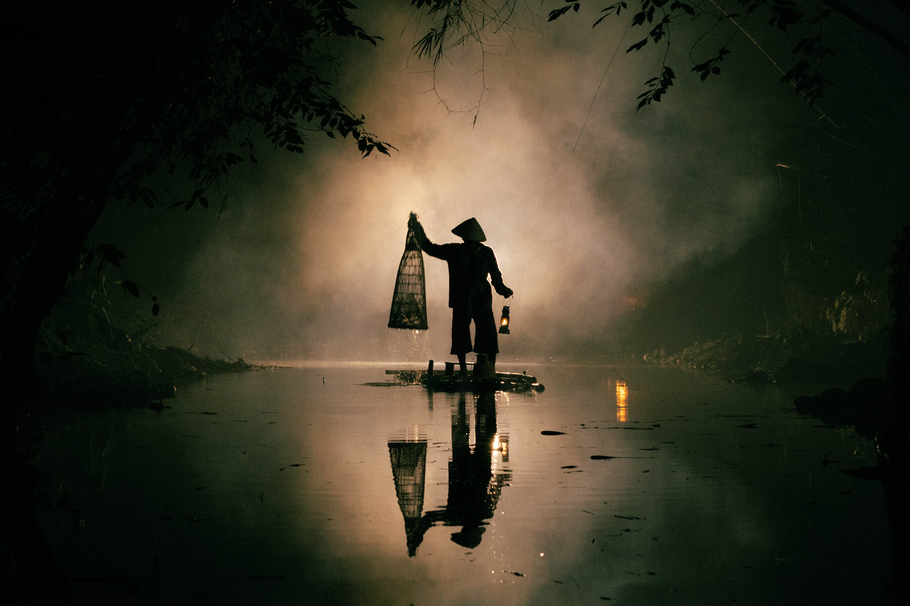
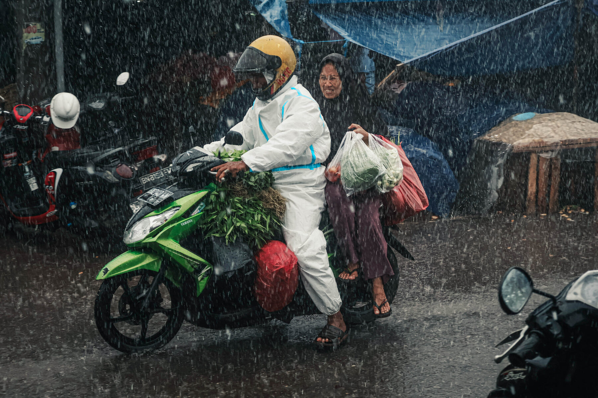
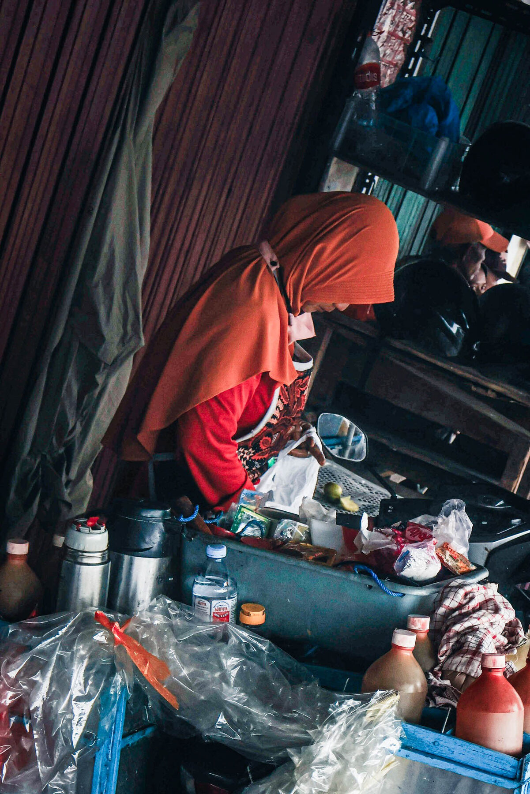
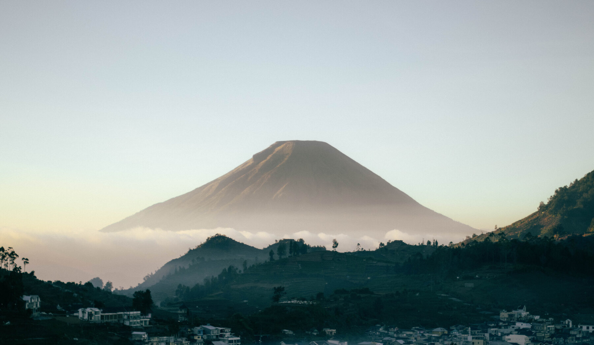
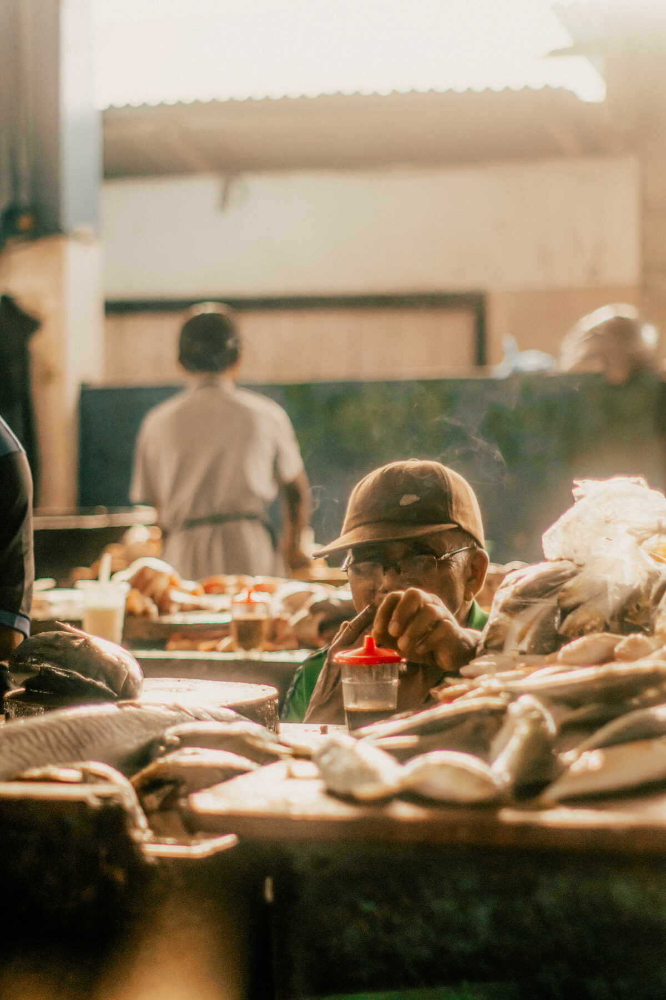
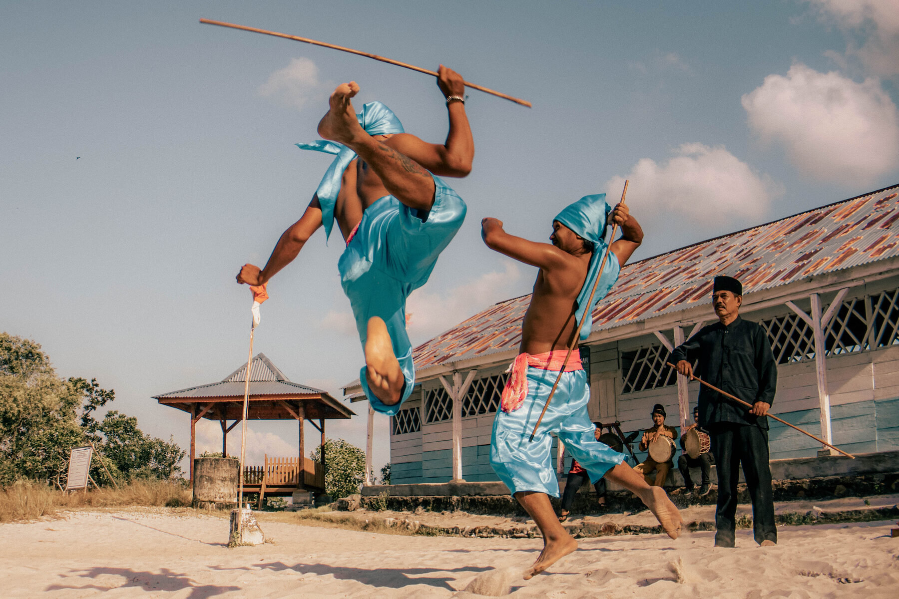
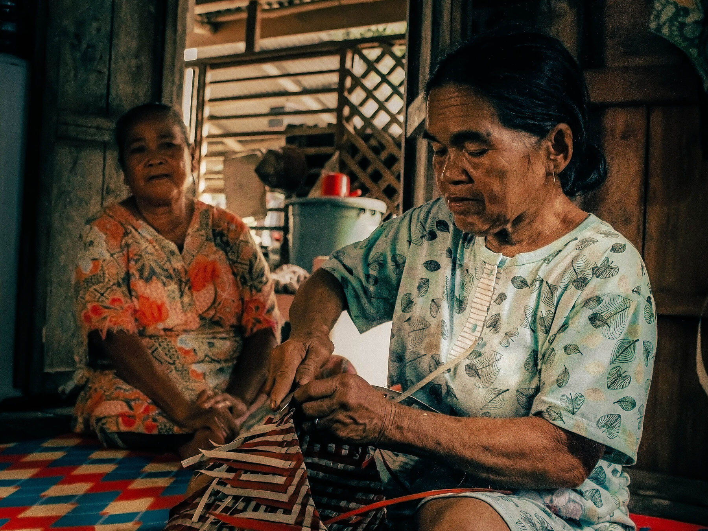
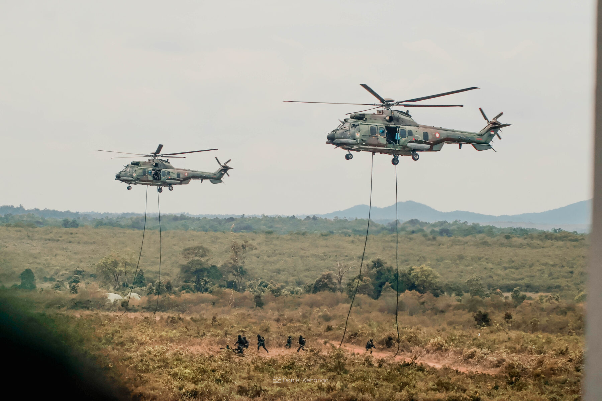
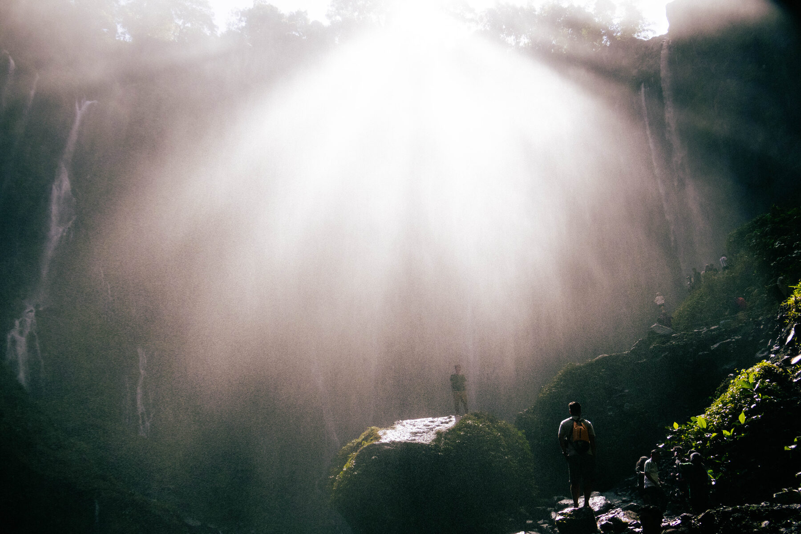

Daniel — Fotografer, berbasis di Yogyakarta
Momen yang
diam-diam
berbicara.
Album Foto Daniel merekam jalanan, wajah asing, dan momen sehari-hari dalam bahasa hitam putih — cahaya, bayangan, dan ekspresi yang jujur.

Karya pilihan
Sebagian kecil dari cerita yang pernah saya abadikan — dari resepsi pernikahan hingga jalan sunyi di pagi hari.








Tentang Daniel
Saya mulai memotret sepuluh tahun lalu dengan kamera pinjaman dan rasa penasaran tentang bagaimana cahaya jatuh di wajah orang. Sejak itu, hitam putih menjadi bahasa saya — cara paling jujur untuk menunjukkan tekstur, emosi, dan waktu tanpa gangguan warna.
Album Foto Daniel berjalan di trotoar, pasar, dan sudut kota — menunggu momen yang tidak bisa diatur ulang. Hasilnya bukan foto yang dipoles, tapi potongan hidup yang jujur apa adanya.
- 10+tahun memotret
- 40+seri foto jalanan
- 24kota disinggahi
- 100%cetak analog tersedia
Layanan
Setiap paket disesuaikan dengan cerita yang ingin diceritakan — ini titik awal, bukan daftar harga baku.
-
Seri foto jalanan
Proyek personal menjelajah satu wilayah atau kota, hasil kurasi foto dalam bentuk cetak atau zine.
Mulai Rp 2.500.000 -
Photo walk berdua
Jalan kaki dua jam belajar melihat dan menangkap momen jalanan, lengkap dengan file hasil edit.
Mulai Rp 750.000 -
Acara & komunitas
Dokumentasi acara budaya, komunitas, atau perayaan kecil dengan pendekatan human interest.
Mulai Rp 2.000.000